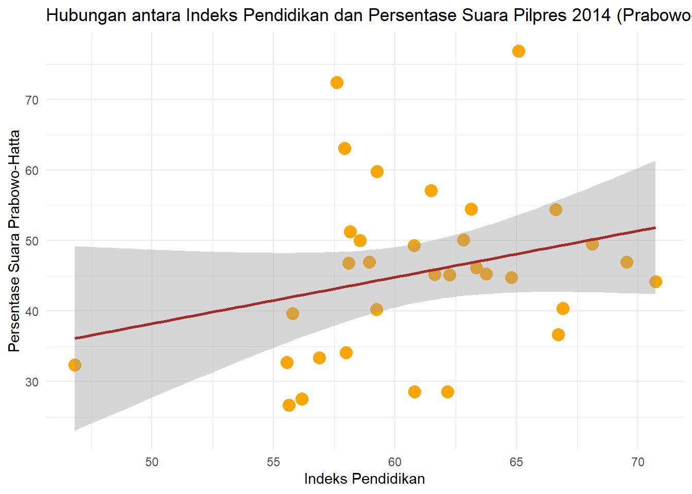
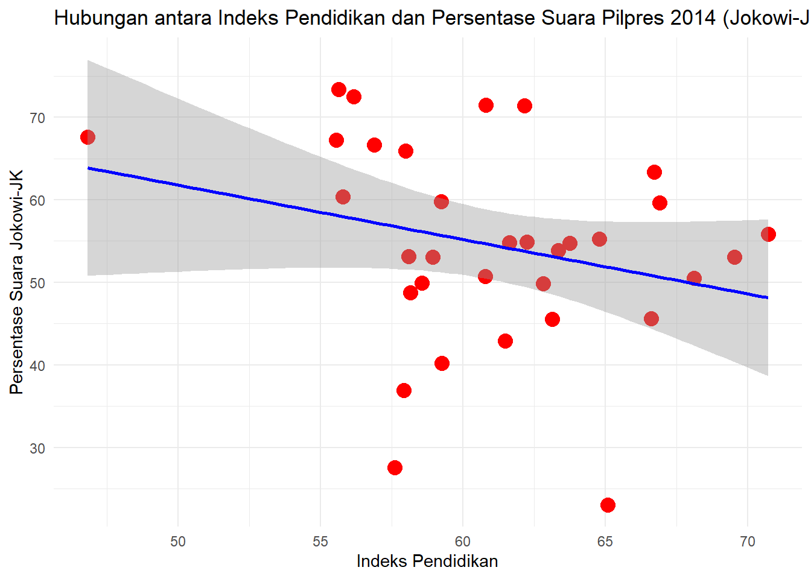

library('tidyverse')
library('readxl')
library('ggplot2')
library('dplyr')
library('broom')
library('ggpubr')
library('car')
library('carData')Analisis Pengaruh Indeks Pendidikan Terhadap Hasil Persentase Suara Sah Pemilihan Presiden tahun 2014
Metode Penelitian Politeknik APP Jakarta

1 Pendahuluan
1.1 Latar belakang
Indonesia selalu mengadakan kontestasi pemilihan presiden setiap lima tahun sekali guna menentukan pasangan presiden dan wakil presiden yang akan memimpin indonesia selama satu masa jabatan berikutnya. Banyak cara kampanye yang dilakukan masing masing kubu, terutama pada dengan ranah pendidikan, seperti “orang cerdas pilih (nama capres)”, “orang pintar pilih (nama capres)” dan sebagainya.
Pendidikan memiliki peran penting dalam pembentukan masyarakat yang berpengetahuan dan berperan aktif dalam proses demokrasi, termasuk pemilihan presiden. Indeks pendidikan, yang mencakup tingkat melek huruf, akses ke pendidikan, dan kualitas pendidikan, dapat mempengaruhi bagaimana individu memahami dan mengevaluasi isu politik, serta bagaimana mereka memilih pemimpin mereka.
Pada tahun 2014, Indonesia mengadakan pemilihan presiden yang menarik perhatian dunia. Dalam pemilihan tersebut, dua calon kuat bersaing untuk posisi tertinggi di negara ini. Namun, apa pengaruh indeks pendidikan terhadap hasil pemilihan tersebut? Apakah ada korelasi antara tingkat pendidikan suatu wilayah dengan persentase suara yang diperoleh oleh masing-masing calon?
Untuk menjawab pertanyaan ini, penelitian ini bertujuan untuk menganalisis pengaruh indeks pendidikan terhadap hasil pemilihan presiden Indonesia tahun 2014 menggunakan metode uji regresi.
1.2 Ruang lingkup
Penulis mengambil objek penelitian yang akan digunakan sebagai variabel penelitian dari Data Badan Pusat Statistik dan Data Komisi Pemilihan Umum Republik Indonesia. Penelitian ini berfokus pada analisis pengaruh indeks pendidikan terhadap hasil pemilihan presiden Indonesia tahun 2014. Ruang lingkup penelitian ini mencakup data persentase suara sah hasil pemilihan pilpres di seluruh provinsi dalam pemilihan presiden tahun 2014.Variabel yang penulis gunakan adalah Hasil persentase pilpres 2014 tiap calon dan indeks pendidikan tiap provinsi tahun 2014. Variabel dependen dalam penelitian ini adalah persentase suara yang diperoleh oleh masing-masing calon presiden. Variabel independen adalah indeks pendidikan.
1.3 Rumusan masalah
Berdasarkan penjelasan tersebut maka pokok masalah penelitian ini adalah:
- Apakah ada pengaruh signifikan antara indeks pendidikan terhadap hasil pemilihan presiden Indonesia tahun 2014?
- Bagaimana hubungan antara indeks pendidikan dengan hasil pemilihan presiden Indonesia tahun 2014?
1.4 Tujuan dan manfaat penelitian
Berdasarkan latar belakang dan rumusan masalah diatas, maka tujuan dari penelitian ini adalah untuk mengetahui apakah ada pengaruh signifikan antara indeks pendidikan terhadap hasil pemilihan presiden Indonesia tahun 2014.
Adapun manfaat penelitian ini adalah:
Manfaat Teoritis: Hasil penelitian ini dapat menjadi kontribusi dalam literatur ilmu politik dan pendidikan, khususnya dalam konteks pemilihan presiden dan pengaruh indeks pendidikan.
Manfaat Praktis:
- Bagi penulis: Penulis harap penelitian ini dapat menjadi referensi bagi orang yang ingin mengetahui tentang pengaruh pendidikan terhadap politik.
- Bagi pemerintah: Hasil penelitian ini dapat digunakan sebagai bahan pertimbangan dalam merumuskan kebijakan pendidikan dan kebijakan politik.
- Bagi partai politik dan calon presiden: Hasil penelitian ini dapat digunakan sebagai bahan evaluasi dan strategi dalam merumuskan kampanye politik di masa mendatang.
- Bagi masyarakat umum: Hasil penelitian ini dapat meningkatkan pemahaman masyarakat tentang pentingnya pendidikan dalam proses demokrasi.
1.5 Package
Packages yang digunakan antara lain sebagai berikut:
── Attaching core tidyverse packages ────────────────────────────────────── tidyverse 2.0.0 ── ✔ dplyr 1.1.4 ✔ readr 2.1.4 ✔ forcats 1.0.0 ✔ stringr 1.5.0 ✔ ggplot2 3.4.4 ✔ tibble 3.2.1 ✔ lubridate 1.9.2 ✔ tidyr 1.3.0 ✔ purrr 1.0.2
2 Studi pustaka
- Pemilihan Presiden dan Demokrasi di Indonesia
Pemilihan Presiden dan Wakil Presiden merupakan perwujudan demokrasi dalam sistem presidensiil. Pemilihan presiden merupakan bagian integral dari sistem demokrasi di Indonesia. Sejak reformasi pada tahun 1998, Indonesia telah mengadakan beberapa pemilihan presiden yang dianggap bebas dan adil. Pemilihan presiden memberikan kesempatan kepada warga negara untuk memilih pemimpin mereka dan berpartisipasi dalam proses demokrasi (sumono, 2014). Berdasarkan Pasal 22 E Undang-Undang Dasar Negara Republik Indonesia 1945 diperkenalkan Pemilu Legislatif, Pemilu Presiden dan Wakil Presiden, sedang Pasal 18 (4) Undang-Undang Dasar Negara Republik Indonesia 1945 mengatur Pemilu Kepala Daerah dan Wakil Kepala Daerah secara bertingkat dari Gubernur hingga Bupati/Walikota.
- Indeks Pendidikan
Indeks pendidikan merupakan salah satu komponen pengukur pendidikan. Indeks pendidikan adalah cerminan dari hasil pembangunan dibidang pendidikan yang mempunyai kedudukan strategis, mengingat kualitas Sumber Daya Manusia (SDM) yang tercermin didalamnya sangat menentukan tingkat produktivitas suatu negara. Indeks pendidikan digunakan untuk mengukur dimensi pengetahuan sebagai salah satu variabel pembangunan manusia. Indeks pendidikan ini merupakan penggabungan dua indikator pendidikan yaitu angka harapan lama sekolah dan rata-rata lama sekolah (BPS, 2021).
- Pengaruh Pendidikan terhadap Partisipasi Politik
Beberapa penelitian telah menunjukkan bahwa pendidikan memiliki pengaruh signifikan terhadap partisipasi politik. Individu yang memiliki tingkat pendidikan yang lebih tinggi cenderung lebih berpartisipasi dalam proses politik, termasuk pemilihan presiden. Tingkat pendidikan seseorang akan mempengaruhi banyak hal dalam kehidupan, salah satunya termasuk dalam kegiatan partisipasi politik. Dengan semakin tingginya tingkat pendidikan mahasiswa akan dapat mengembangkan pola pikir dalam menentukan sikap dan pilihannya khususnya dalam kehidupan politik. Jika pemilih memiliki tingkat pendidikan yang tinggi maka sudah seharusnya dalam hal memilih akan sesuai dengan pilihannya, tanpa ada paksaan dan tekanan dari pihak manapun. Pendidikan dalam membangun kehidupan politik yang ideal akan sangat strategis jika dimulai dari kalangan ademisi (Arifin, 2018).
3 Metode penelitian
3.1 Data
Berikut adalah data yang saya gunakan dalam penelitian ini, data berikut merupakan data persentase perolehan suara sah pilpres 2014 tiap calon dan indeks pendidikan tahun 2014.
| Provinsi | Paslon 01 (Prabowo-Hatta) | Paslon 02 (Jokowi-JK) | Total |
|---|---|---|---|
| ACEH | 54,39 | 45,61 | 100 |
| SUMATERA UTARA | 44,76 | 55,24 | 100 |
| SUMATERA BARAT | 76,92 | 23,08 | 100 |
| RIAU | 50,12 | 49,88 | 100 |
| JAMBI | 49,25 | 50,75 | 100 |
| SUMATERA SELATAN | 51,26 | 48,74 | 100 |
| BENGKULU | 45,27 | 54,73 | 100 |
| LAMPUNG | 46,93 | 53,07 | 100 |
| KEP. BANGKA BELITUNG | 32,74 | 67,26 | 100 |
| KEPULAUAN RIAU | 40,37 | 59,63 | 100 |
| DKI JAKARTA | 46,92 | 53,08 | 100 |
| JAWA BARAT | 59,78 | 40,22 | 100 |
| JAWA TENGAH | 33,35 | 66,65 | 100 |
| D I YOGYAKARTA | 44,19 | 55,81 | 100 |
| JAWA TIMUR | 46,83 | 53,17 | 100 |
| BANTEN | 57,1 | 42,9 | 100 |
| BALI | 28,58 | 71,42 | 100 |
| NUSA TENGGARA BARAT | 72,45 | 27,55 | 100 |
| NUSA TENGGARA TIMUR | 34,08 | 65,92 | 100 |
| KALIMANTAN BARAT | 39,62 | 60,38 | 100 |
| KALIMANTAN TENGAH | 40,21 | 59,79 | 100 |
| KALIMANTAN SELATAN | 50,05 | 49,95 | 100 |
| KALIMANTAN TIMUR | 36,62 | 63,38 | 100 |
| SULAWESI UTARA | 46,12 | 53,88 | 100 |
| SULAWESI TENGAH | 45,17 | 54,83 | 100 |
| SULAWESI SELATAN | 28,57 | 71,43 | 100 |
| SULAWESI TENGGARA | 45,1 | 54,9 | 100 |
| GORONTALO | 63,1 | 36,9 | 100 |
| SULAWESI BARAT | 26,63 | 73,37 | 100 |
| MALUKU | 49,48 | 50,52 | 100 |
| MALUKU UTARA | 54,45 | 45,55 | 100 |
| PAPUA BARAT | 27,51 | 72,49 | 100 |
| PAPUA | 32,37 | 67,63 | 100 |
| Provinsi | Indeks Pendidikan |
|---|---|
| ACEH | 66,6 |
| SUMATERA UTARA | 64,78 |
| SUMATERA BARAT | 65,08 |
| RIAU | 62,82 |
| JAMBI | 60,77 |
| SUMATERA SELATAN | 58,16 |
| BENGKULU | 63,75 |
| LAMPUNG | 58,93 |
| KEP. BANGKA BELITUNG | 55,54 |
| KEPULAUAN RIAU | 66,89 |
| DKI JAKARTA | 69,52 |
| JAWA BARAT | 59,26 |
| JAWA TENGAH | 56,88 |
| D I YOGYAKARTA | 70,7 |
| JAWA TIMUR | 58,09 |
| BANTEN | 61,48 |
| BALI | 62,16 |
| NUSA TENGGARA BARAT | 57,6 |
| NUSA TENGGARA TIMUR | 57,98 |
| KALIMANTAN BARAT | 55,78 |
| KALIMANTAN TENGAH | 59,23 |
| KALIMANTAN SELATAN | 58,55 |
| KALIMANTAN TIMUR | 66,7 |
| SULAWESI UTARA | 63,33 |
| SULAWESI TENGAH | 61,63 |
| SULAWESI SELATAN | 60,79 |
| SULAWESI TENGGARA | 62,24 |
| GORONTALO | 57,92 |
| SULAWESI BARAT | 55,63 |
| MALUKU | 68,1 |
| MALUKU UTARA | 63,12 |
| PAPUA BARAT | 56,17 |
| PAPUA | 46,82 |
Sumber data: Komisi Pemilihan Umum Republik Indonesia dan Badan Pusat Statistik Indonesia

3.2 Import Data
Penelitian ini menggunakan data Persentase Hasil Perolehan Suara Sah Pilpres 2014 sebagai Variabel dependen dan Data Indeks Pendidikan sebagai Variabel Independen.
#Baca Data
library('readxl')
dat<-read_excel("C:/Users/yusri/Documents/UAS Metopel/data uas.xlsx")
head(dat)# A tibble: 6 × 5
Provinsi Edu PrbwHt JkwJk Total
<chr> <dbl> <dbl> <dbl> <dbl>
1 ACEH 66.6 54.4 45.6 100
2 SUMATERA UTARA 64.8 44.8 55.2 100
3 SUMATERA BARAT 65.1 76.9 23.1 100
4 RIAU 62.8 50.1 49.9 100
5 JAMBI 60.8 49.2 50.8 100
6 SUMATERA SELATAN 58.2 51.3 48.7 1003.3 Plot dengan ggplot
3.3.1 Paslon 01 (Prabowo-Hatta)
#scatter plor dengan ggplot2
ggplot(data=dat, aes(x = Edu, y = PrbwHt)) +
geom_point(color="orange",size=4) +
labs(x = "Indeks Pendidikan", y = "Persentase Suara Prabowo-Hatta",
title = "Hubungan antara Indeks Pendidikan dan Persentase Suara Pilpres 2014 (Prabowo-Hatta)") +
theme_minimal()

3.3.2 Paslon 02 (Jokowi-Jusuf Kalla)
#scatter plor dengan ggplot2
ggplot(data=dat, aes(x = Edu, y = JkwJk)) +
geom_point(color="red",size=4) +
labs(x = "Indeks Pendidikan", y = "Persentase Suara Jokowi-JK",
title = "Hubungan antara Indeks Pendidikan dan Persentase Suara Pilpres 2014 (Jokowi-JK)") +
theme_minimal()

3.4 Plot error
3.4.1 Paslon 01 (Prabowo-Hatta)
library('readxl')
dat<-read_excel("C:/Users/yusri/Documents/UAS Metopel/data uas.xlsx")
reg1<-lm(PrbwHt~Edu,data=dat)
#Membuat Error
dat$u<-resid(reg1)
plot(dat$PrbwHt,dat$u,xlab="Tingkat Pendidikan",ylab="Persentase Suara Prabowo-Hatta")
abline(h=0,col="orange",
lty="dashed",
lwd="3")3.4.2 Paslon 02 (Jokowi-Jusuf Kalla)
library('readxl')
dat<-read_excel("C:/Users/yusri/Documents/UAS Metopel/data uas.xlsx")
reg1<-lm(JkwJk~Edu,data=dat)
#Membuat Error
dat$u<-resid(reg1)
#Plot Error
plot(dat$JkwJk,dat$u,xlab="Tingkat Pendidikan",ylab="Persentase Suara Jokowi-JK")
abline(h=0,
col="red",
lty="dashed",
lwd="3")3.5 Metode analisis
Metode yang dipilih adalah regresi univariat atau Ordinary Least Square (OLS) dengan 1 variabel independen. Penelitian ini bertujuan untuk mencari pengaruh Indeks Pendidikan terhadap Persentase suara sah tiap Calon Presiden. Spesifikasi yang dilakukan adalah:
\[ y_{t}=\beta_0 + \beta_1 x_t+\mu_t \] di mana \(y_t\) adalah Persentase Suara Calon Presiden dan \(x_t\) adalah Indeks Pendidikan.
4 Pembahasan
4.1 Pembahasan masalah
Untuk menemukan hubungan antara Indeks Pendidikan dan Persentase Suara Sah Calon Presiden, saya menggunakan OLS dengan menggunakan dua model regresi untuk tiap calon presiden. Sehingga didapat hasil yang sama, yakni seperti tabel berikut:
4.2 Hasil Regresi
4.2.1 Paslon 01 (Prabowo-Hatta)
| Variable | Coefficient | Std. error | t-value | Prob(.) |
|---|---|---|---|---|
| Intercept | 5.2626 | 26.2311 | 0.201 | 0.842 |
| X | 0.6590 | 0.4287 | 1.537 | 0.134 |
| R Squared | 0.07084 | |||
| Adjusted R Squared | 0.04086 | |||
| F Statistic | 2.363 | |||
| Prob (F-Statistic) | 0.1344 |
Hasil Regresi tersebut dimasukkan ke dalam rumus persamaan sehingga: \[ y_{t}= 5.2626 + 0.6590 X + \mu_t \] Dari persamaan yang dihasilkan, kita bisa menyimpulkan bahwa Indeks Pendidikan sangat berpengaruh terhadap Persentase suara Prabowo-Hatta. Hal ini dapat dinilai lagi dari variabel x nya yang positif. Dari persamaan tersebut kita juga dapat menyimpulkan bahwa Tiap indeks pendidikan naik 1 poin, Maka Perolehan suara Prabowo-Hatta akan naik 0.6590.
4.2.2 Paslon 02 (Jokowi-Jusuf Kalla)
| Variable | Coefficient | Std. error | t-value | Prob(.) |
|---|---|---|---|---|
| Intercept | 94.7374 | 26.2311 | 3.612 | 0.00106 |
| X | -0.6590 | 0.4287 | -1.537 | 0.13436 |
| R Squared | 0.07084 | |||
| Adjusted R Squared | 0.04086 | |||
| F Statistic | 2.363 | |||
| Prob (F-Statistic) | 0.1344 |
Hasil Regresi tersebut dimasukkan ke dalam rumus persamaan sehingga: \[ y_{t}= 94.7374 + (-0.6590 X) + \mu_t \] Dari persamaan tersebut, kita bisa menyimpulkan bahwa Indeks Pendidikan juga sangat berpengaruh terhadap Persentase suara Jokowi-Jusuf Kalla. Dari persamaan tersebut kita dapat menyimpulkan bahwa Tiap indeks pendidikan naik 1 poin, Maka Perolehan suara Jokowi-Jusuf Kalla akan turun sebesar 0.6590.
4.3 Analisis masalah
4.3.1 Regresi Model Pertama
4.3.1.1 Paslon 01 (Prabowo-Hatta)
#Pemodelan Regresi
reg1<-lm(PrbwHt~Edu,data=dat)
#Interpretasi Model
summary(reg1)
Call:
lm(formula = PrbwHt ~ Edu, data = dat)
Residuals:
Min 1Q Median 3Q Max
-17.648 -8.975 -1.181 5.236 29.227
Coefficients:
Estimate Std. Error t value Pr(>|t|)
(Intercept) 5.2626 26.2311 0.201 0.842
Edu 0.6590 0.4287 1.537 0.134
Residual standard error: 11.83 on 31 degrees of freedom
Multiple R-squared: 0.07084, Adjusted R-squared: 0.04086
F-statistic: 2.363 on 1 and 31 DF, p-value: 0.13444.3.1.2 Paslon 02 (Jokowi-Jusuf Kalla)
#Pemodelan Regresi
reg1<-lm(JkwJk~Edu,data=dat)
#Interpretasi Model
summary(reg1)
Call:
lm(formula = JkwJk ~ Edu, data = dat)
Residuals:
Min 1Q Median 3Q Max
-29.227 -5.236 1.181 8.975 17.648
Coefficients:
Estimate Std. Error t value Pr(>|t|)
(Intercept) 94.7374 26.2311 3.612 0.00106 **
Edu -0.6590 0.4287 -1.537 0.13436
---
Signif. codes: 0 '***' 0.001 '**' 0.01 '*' 0.05 '.' 0.1 ' ' 1
Residual standard error: 11.83 on 31 degrees of freedom
Multiple R-squared: 0.07084, Adjusted R-squared: 0.04086
F-statistic: 2.363 on 1 and 31 DF, p-value: 0.13444.3.2 Regresi Model Kedua
4.3.2.1 Paslon 01 (Prabowo-Hatta)
#Regresi model 2
library('car')
library('carData')
library('readxl')
dat<-read_excel("C:/Users/yusri/Documents/UAS Metopel/data uas.xlsx")
#Pemodelan Regresi
model <- lm(PrbwHt ~ Edu, data = dat)
#Interpretasi Model
summary(model)
Call:
lm(formula = PrbwHt ~ Edu, data = dat)
Residuals:
Min 1Q Median 3Q Max
-17.648 -8.975 -1.181 5.236 29.227
Coefficients:
Estimate Std. Error t value Pr(>|t|)
(Intercept) 5.2626 26.2311 0.201 0.842
Edu 0.6590 0.4287 1.537 0.134
Residual standard error: 11.83 on 31 degrees of freedom
Multiple R-squared: 0.07084, Adjusted R-squared: 0.04086
F-statistic: 2.363 on 1 and 31 DF, p-value: 0.1344#Visualisasi Data
plot(model)4.3.2.2 Paslon 02 (Jokowi-Jusuf Kalla)
library('car')
library('carData')
library('readxl')
dat<-read_excel("C:/Users/yusri/Documents/UAS Metopel/data uas.xlsx")
#Pemodelan Regresi
model <- lm(JkwJk ~ Edu, data = dat)
#Interpretasi Model
summary(model)
Call:
lm(formula = JkwJk ~ Edu, data = dat)
Residuals:
Min 1Q Median 3Q Max
-29.227 -5.236 1.181 8.975 17.648
Coefficients:
Estimate Std. Error t value Pr(>|t|)
(Intercept) 94.7374 26.2311 3.612 0.00106 **
Edu -0.6590 0.4287 -1.537 0.13436
---
Signif. codes: 0 '***' 0.001 '**' 0.01 '*' 0.05 '.' 0.1 ' ' 1
Residual standard error: 11.83 on 31 degrees of freedom
Multiple R-squared: 0.07084, Adjusted R-squared: 0.04086
F-statistic: 2.363 on 1 and 31 DF, p-value: 0.1344#Visualisasi Data
plot(model)5 Kesimpulan
5.1 Paslon 01 (Prabowo-Hatta)
- Dengan menggunakan metode kedua, Tiap indeks pendidikan naik 1 poin, Maka Persentase Perolehan suara Prabowo-Hatta akan naik 65.9%.
- Koefisien Regresi: Koefisien regresi untuk variabel Edu adalah 0.6590. Ini berarti bahwa untuk setiap peningkatan satu unit dalam Indeks Pendidikan, kita dapat mengharapkan peningkatan sebesar 0.6590 unit dalam persentase suara pilpres calon Prabowo-Hatta, asumsi variabel lain tetap.
- Signifikansi Statistik: Nilai p untuk variabel Edu adalah 0.134, yang lebih besar dari ambang batas umum 0.05. Ini menunjukkan bahwa Indeks Pendidikan tidak memiliki pengaruh yang signifikan terhadap persentase suara pilpres calon Prabowo-Hatta pada tingkat kepercayaan 95%.
- R-squared: Nilai R-squared adalah 0.07084, yang berarti bahwa model ini menjelaskan sekitar 7.1% variasi dalam persentase suara pilpres calon Prabowo-Hatta. Nilai ini cukup rendah, menunjukkan bahwa model ini mungkin tidak menjelaskan variasi dalam persentase suara pilpres calon Prabowo-Hatta dengan baik.
- Residuals: Residuals adalah perbedaan antara nilai yang diamati dan nilai yang diprediksi oleh model. Dalam hal ini, residuals berkisar antara -17.648 dan 29.227, menunjukkan bahwa model ini memiliki beberapa kesalahan prediksi yang cukup besar.
Secara keseluruhan, hasil ini menunjukkan bahwa, berdasarkan data yang digunakan dalam analisis ini, Indeks Pendidikan tampaknya tidak memiliki pengaruh yang signifikan terhadap persentase suara pilpres calon Prabowo-Hatta. Namun, perlu diingat bahwa ini adalah hasil dari satu analisis dan mungkin perlu penelitian lebih lanjut untuk konfirmasi.
5.2 Paslon 02 (Jokowi-JK)
- Dengan menggunakan metode kedua, Tiap indeks pendidikan naik 1 poin, Maka Persentase Perolehan suara Jokowi-Jusuf Kalla akan turun sebesar 65.9%.
- Koefisien Regresi: Koefisien regresi untuk variabel Edu adalah -0.6590. Ini berarti bahwa untuk setiap peningkatan satu unit dalam Indeks Pendidikan, kita dapat mengharapkan penurunan sebesar 0.6590 unit dalam persentase suara pilpres calon Jokowi-Jusuf Kalla, asumsi variabel lain tetap.
- Signifikansi Statistik: Nilai p untuk variabel Edu adalah 0.134, yang lebih besar dari ambang batas umum 0.05. Ini menunjukkan bahwa Indeks Pendidikan tidak memiliki pengaruh yang signifikan terhadap persentase suara pilpres calon Jokowi-Jusuf Kalla pada tingkat kepercayaan 95%.
- R-squared: Nilai R-squared adalah 0.07084, yang berarti bahwa model ini menjelaskan sekitar 7.1% variasi dalam persentase suara pilpres calon Jokowi-Jusuf Kalla. Nilai ini cukup rendah, menunjukkan bahwa model ini mungkin tidak menjelaskan variasi dalam persentase suara pilpres calon Jokowi-Jusuf Kalla dengan baik
- Residuals: Residuals adalah perbedaan antara nilai yang diamati dan nilai yang diprediksi oleh model. Dalam hal ini, residuals berkisar antara -29.227 dan 17.648, menunjukkan bahwa model ini memiliki beberapa kesalahan prediksi yang cukup besar.
Secara keseluruhan, hasil ini menunjukkan bahwa, berdasarkan data yang digunakan dalam analisis ini, Indeks Pendidikan tampaknya tidak memiliki pengaruh yang signifikan terhadap persentase suara pilpres calon Jokowi-Jusuf Kalla. Namun, perlu diingat bahwa ini adalah hasil dari satu analisis dan mungkin perlu penelitian lebih lanjut untuk konfirmasi.
5.3 Kesimpulan Akhir
Pasangan calon nomor urut 1 (Prabowo-Hatta) memang sangat diuntungkan dengan naiknya indeks pendidikan, hal ini dikarenakan nilai variabel X nya yang positif. Namun perlu dicatat, hal ini tidak lantas mengunggulkan pasangan calon nomor urut 01 (Prabowo-Hatta) atas Pasangan calon nomor urut 02 (Jokowi-Jusuf Kalla). Meskipun variabel x paslon 01 positif, nilai koefisien β0 paslon 01 (Prabowo-Hatta) selalu lebih kecil dari paslon 02 (Jokowi-Jusuf Kalla).
Begitupula sebaliknya, meskipun nilai variabel X paslon 02 (Jokowi-Jusuf Kalla) negatif, nilai koefisien β0 paslon 02 selalu lebih besar dibandingkan nilai koefisien β0 paslon 01 (Prabowo-Hatta).
6 Saran
6.1 Rekomendasi
Strategi Kampanye: Pasangan calon nomor urut 1 (Prabowo-Hatta) mungkin perlu mempertimbangkan strategi kampanye yang lebih menargetkan pemilih dengan tingkat pendidikan yang lebih tinggi seperti D.I Yogyakarta, DKI Jakarta, Kepulauan Riau dan Aceh, mengingat hasil pemilihan mereka tampaknya lebih baik di antara kelompok ini. Sebaliknya, pasangan calon nomor urut 2 (Jokowi-Jusuf Kalla) mungkin perlu mempertimbangkan strategi kampanye yang lebih menargetkan pemilih dengan tingkat pendidikan yang lebih rendah seperti Papua, Kalimantan Barat, Sulawesi Barat, Jawa tengah dan Papua Barat.
Hasil ini menunjukkan pentingnya pendidikan dalam pemilihan presiden. Oleh karena itu, kedua pasangan calon mungkin perlu mempertimbangkan bagaimana mereka bisa mendukung pendidikan publik dalam strategi kampanye mereka.
Meskipun hasil analisis ini menarik, penting untuk diingat bahwa banyak faktor lain yang mempengaruhi hasil pemilihan presiden. Oleh karena itu, mungkin perlu dilakukan analisis lebih lanjut untuk memahami pengaruh faktor-faktor lain, seperti ekonomi, isu-isu sosial, dan lainnya.
6.2 Hambatan
Hasil penelitian ini hanya berlaku untuk tahun 2014 saja.
Perlu dilakukan penelitian selanjutnya untuk mengetahui pengaruh indikator lain terhadap hasil pemilihan presiden.
Perlu dilakukan penelitian selanjutnya untuk mengetahui pengaruh indikator pendidikan terhadap hasil pemilihan presiden di negara lain.
7 Referensi
Arifin(s). (2018) PENGARUH PENDIDIKAN POLITIK TERHADAP PARTISIPASI POLITIK MAHASISWA PRODI PPKn FKIP UNIVERSITAS MUHAMMADIYAH PONOROGO PADA PELAKSANAN PEMILIHAN UMUM KEPALA DAERAH PROVINSI JAWA TIMUR TAHUN 2018. Jurnal Edupedia, 2(2). DOI: 10.24269/ed.v2i2.144
Badan Pusat Statistik, Persentase Perolehan Suara Sah Pemilu Presiden dan Wakil Presiden pada Putaran Pertama Menurut Provinsi dan Nama Pasangan Calon Presiden dan Wakil Presiden, 2009 dan 2014. (2019). Jakarta: Badan Pusat Statistik, accessed: 01-01-2024.
Komisi Pemilihan Umum RI, “Hasil penghitungan perolehan suara dari setiap provinsi dan luar negeri dalam pemilu presiden dan wakil presiden tahun 2014,” accessed: 01-01-2024.
Nasution, C. N., & Widyaningsih, Y. (2022). Klasifikasi Pemilih dalam Pemilu 2019 di Indonesia Menggunakan Regresi Logistik Multinomial dan Chi-Square Automatic Decision Tree (CHAID). Jurnal Statistika Dan Aplikasinya, 6(2). DOI:10.21009/JSA.06201
Rahayu, V. D. (2023). ANALISIS FAKTOR-FAKTOR YANG MEMPENGARUHI INDEKS PENDIDIKAN DI PROVINSI JAWA TENGAH TAHUN 2015-2021 (Studi Kasus pada BPS (Badan Pusat Statistik) dan NPD (Neraca Pendidikan Daerah) Provinsi Jawa Tengah Tahun 2015-2021). http://repositori.unsil.ac.id/id/eprint/10555
Sh, Sumono. “Pemilihan Presiden dan Wakil Presiden Berdasarkan Sistem Presidensil.” Seminar Nasional “Perlindungan Hukum Terhadap Tenaga Kesehatan dan Pasien dalam Perspektif UU No.36 Tahun 2014”, Surakarta, Indonesia, April 2017. Universitas Islam Batik Surakarta, 2017.